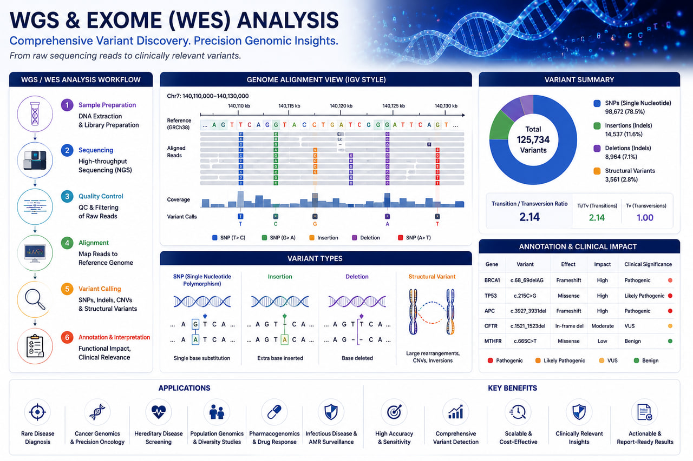

AI-Assisted Bioinformatics
Machine learning-enabled workflows for biomarker discovery, variant prioritization, and predictive genomics.
AI-Powered Variant Discovery, Clinical Genomics & Precision Medicine Analytics

RASA Life Science Informatics provides advanced Whole Genome Sequencing (WGS) and Whole Exome Sequencing (WES) data analysis services to support genomic research, clinical genomics, rare disease investigations, cancer genomics, biomarker discovery, and precision medicine programs.
Our scalable bioinformatics workflows enable comprehensive identification, annotation, interpretation, and prioritization of genomic variants from large-scale sequencing datasets. Using industry-standard tools and AI-assisted analytics, we help pharmaceutical companies, biotechnology organizations, hospitals, diagnostic laboratories, CROs, and academic researchers transform sequencing data into actionable biological and clinical insights.
We support data generated from Illumina, Oxford Nanopore, PacBio HiFi, and hybrid sequencing platforms through secure, reproducible, and cloud-ready computational pipelines.
Comprehensive analysis of coding and non-coding regions across the entire genome.
Focused analysis of protein-coding regions associated with disease and clinical phenotypes.
Comprehensive biological and clinical interpretation of genomic variants.
Advanced somatic variant detection and tumor profiling workflows.
Identification and prioritization of disease-causing genetic variants.
Identification of causative genetic variants associated with inherited disorders.
Somatic mutation profiling and precision oncology applications.
Genomic analysis supporting personalized therapeutic strategies.
Variant interpretation and translational genomics research.
Large-scale genomic variation studies and cohort analysis.
Identification of genomic biomarkers for diagnosis and prognosis.
Identification of SNPs, InDels, structural variants, and CNVs.
Prioritization of clinically relevant disease-causing variants.
Detection of somatic mutations and actionable genomic alterations.
Genomic insights supporting personalized treatment decisions.
Identification of predictive and prognostic genomic markers.
Machine learning-enabled workflows for biomarker discovery, variant prioritization, and predictive genomics.
Support for Illumina, Oxford Nanopore, PacBio HiFi, and 10x Genomics platforms.
From raw sequencing data to biological interpretation and publication-ready reports.
Deployable on AWS, Google Cloud, HPC clusters, and secure on-premise environments.
Built using Nextflow, Snakemake, Docker, and Singularity for enterprise-grade bioinformatics operations.
Get in touch with our team in Pune, India to discuss sample sizes, platform details, and custom bioinformatics pipeline configurations for your research program.
Start a Project